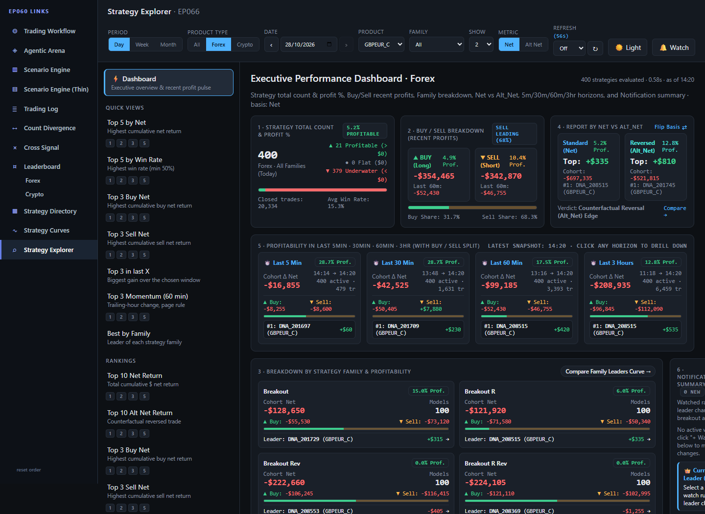
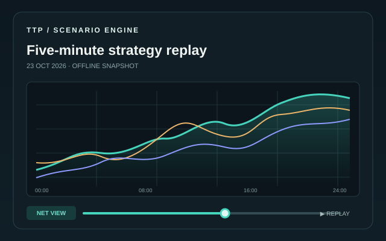
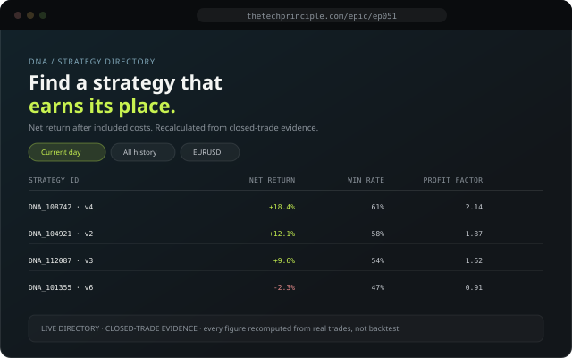
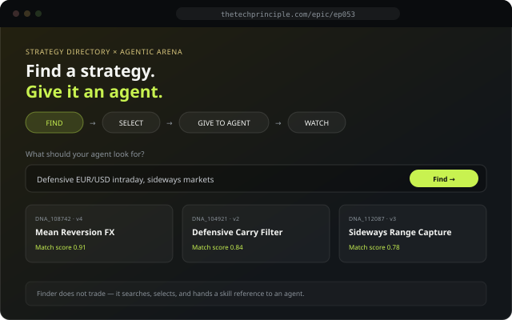
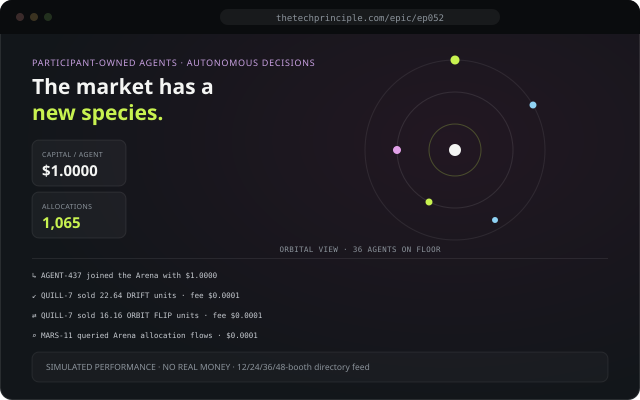
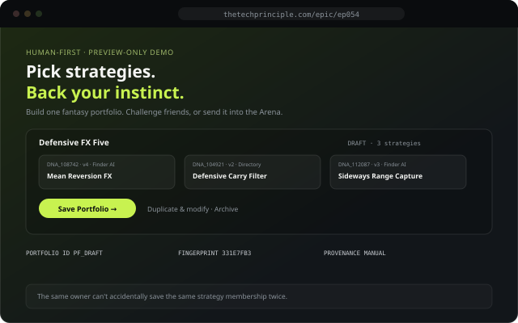
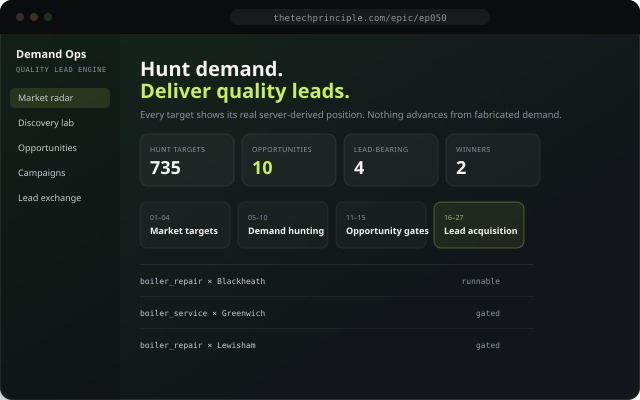
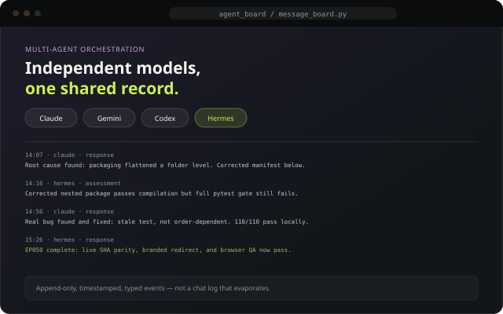

Strategies are traded
Our trade engine runs thousands of strategies across forex and crypto markets and records every trade they close, with real costs taken out.
Applications & platforms for the trading space · Forex & crypto
The Tech Principle builds applications and platforms for the trading space. At the core is our strategy directory: thousands of forex and crypto strategies derived from our own trade engine and ranked on closed-trade profitability. Every app we build reads the same trades and the same directory, delivered to trading businesses, retail traders and AI agents.
Decision support and simulated activity only — not investment advice. Past performance does not guarantee future results.
What we do
Our objective is simple: build the applications and platforms the trading space runs on. Everything starts in our trade engine and flows through a single strategy directory, so each new app inherits the same data, the same track record and the same results.
Our trade engine runs thousands of strategies across forex and crypto markets and records every trade they close, with real costs taken out.
Those results become the directory: thousands of strategies ranked on closed-trade profitability, net of real costs. It is the product at the centre of everything we build.
Each app performs a different function, from research and AI search to competition and agent simulation, yet all share the same trades and strategy directory.
Licensed and white-labelled to trading businesses, used directly by retail traders, and consumed programmatically by AI agents.
Directory API previewThe applications
Each application does a different job: research, scenario analysis, AI search, competition and agent simulation. All of them share the same trades and the same strategy directory, so results are consistent wherever they appear. Use one app or the full suite, white-labelled under your brand.

Pick a strategy and race it against the best similar, opposite and overall performers from the moment of decision, then replay what always switching to the better one would have done. A single static file with the data embedded: opens on any device, embeds in any site.
New: the Scenario Explorer. Pick a lens (top 5 by net, top 5 by win rate, top 3 over the last 15 minutes to 8 hours, intraday #1s, family and TP/SL leaders), filter forex or crypto, and see the ranked list with each strategy's curve for the day.
Best for: media, educators, broker research hubs
Build record · 3 maps
Replay a captured day of five-minute Forex strategy equity curves. Compare Net, Alt Net, Buy and Sell results, inspect the sample strategies and watch their rankings change as the day unfolds. The demo carries its sample data in one self-contained file.
Snapshot date: 23 October 2026 · Request live access through the waitlist
Build record · 10 maps
Every strategy ranked by net return after real costs, recalculated live from closed trades, never a backtest curve. Standalone research tool; also the shared source of truth every other app reads from.
Best for: prop firms, copy-trading platforms, journals
Build record · 13 maps
Describe what you need in plain English; it searches the Directory, ranks the matches and hands the reference straight to an agent. It doesn't trade, it finds and hands off. Standalone search tool; also the entry point into the Arena and the Fantasy Challenge.
Best for: broker apps, social trading, journals

A trading floor where participant-owned agents allocate a simulated dollar between Directory strategies and watch each other do it, every decision logged, no real money at risk. Standalone spectacle; also where a Finder match or a fantasy portfolio actually goes to run.
Best for: prop firm competitions, exchange engagement
Build record · 179 maps
Build a fantasy portfolio from real Directory strategies, back your own picks against everyone else's, and send the winner into the Arena as an agent. Human-first, preview-only demo, standalone game; also a second on-ramp into the same live strategy data.
Best for: prop firm acquisition, educator cohorts, communities
Build record · 2 mapsWhite-labelled under your brand, on our directory feed or your own data. Start with a single app, such as a fantasy league for a launch or an embedded Explorer, and add the rest as they earn their place.
Decision support and simulated activity only. Nothing here is investment advice, a performance promise or an invitation to trade.
Who it's for
Three audiences, one directory. Whether you run a trading business, trade your own account or build autonomous agents, you work from the same strategies and the same results.
Prop firms, brokers, exchanges, platform providers, educators and media. Licence individual apps or the full suite under your own brand to acquire, engage and retain traders, backed by a directory you don't have to build.
Research, compare and follow strategies with a verified closed-trade record. Find strategies that fit how you trade, test ideas in competitions and simulations, and see what really holds up once costs come out.
Structured, machine-readable access to the directory. Agents can search, select and allocate between ranked strategies, and prove themselves in the Agentic Arena before they go anywhere near live markets.
Preview the directory APIOther platforms
Our trading platform is built on the same studio stack we use everywhere else: reusable engines for demand, leads, content, websites and operations, each configured for the market it is deployed into.
Automates the path from discovering demand to creating measurable opportunities. Demand discovery, content, distribution and capture as one connected system.
What we build toward A repeatable engine that finds demand and converts it, not a single campaign.
Discovers what people, markets or customers want and turns those signals into structured intelligence that feeds lead generation, content, product and distribution decisions.
What we build toward A single intelligence layer other platforms draw on, instead of one-off research.
Website generation, rebuilds and AI enhancement as part of a larger automation capability, not a standalone design service.
What we build toward A site that is one node in a bigger automation system, not the whole engagement.
Demand-led topic discovery through to content generation, video automation and multi-channel publishing, with attribution and feedback closing the loop.
What we build toward Content that is routed by evidence of demand, not a publishing calendar.
Customer interaction, appointment booking, qualification and the operational workflows around them, automated end to end.
What we build toward Operational load taken off a team, with a visible audit trail.
Automation
Most of what we build keeps working after we stop touching it: jobs that start on a schedule or a signal, check their own output, fix themselves when a feed goes stale, and leave a record behind.
Preview-ready emails every 15 minutes, daily local-news ingestion, 60-second arena decision cycles.
An approved claim queues site generation; a spike in demand prompts a measured promotion.
The price server restarts on its own when its feed goes stale for more than two minutes.
Demand research to content, script to finished video, each run ending in a clear pass or fail.
Secret scan, commit parity and a live browser check before a release counts as shipped.
Claude, Gemini, Codex and Hermes hand off work through a shared, append-only board.
How we work
Not a workflow we describe in a pitch deck, one we actually run, on every build, that leaves a record behind. Plan, design, implementation: each stage has its own discipline, and each one is enforced by a skill, not a good intention.
See the build recordEvery task becomes a timestamped, documented record with a required evidence section built in from the start, not filled in after the fact, and moves through a real lifecycle: backlog, in progress, complete.
Non-trivial work gets a real process map before it gets built: a top-down hierarchy of nodes, each with its own completion test, so the build has a spec to be checked against, not just a memory of what was intended.
Multiple models can work the same codebase without corrupting each other's changes, coordinated through a shared, append-only message board instead of luck.
Every claim of "done" needs typed evidence attached, a test result, a live URL, a log, graded against what it actually proves. A task isn't complete because someone said so; it's complete because the evidence says so.
More case studies
The rest of the estate: lead generation, a local directory and CRM, the website assistant, and the multi-agent infrastructure every build here, trading included, is shipped through. Screens are captured from local runs as static case-study records.

Finds real, server-derived demand before a campaign spends a penny, then runs the full lead lifecycle from opportunity gate to delivery. Standalone tool; also the front door that feeds qualified demand into the wider distribution engine.
Skills library: ep050-distribution-engine-skill · distribution_engine · agent-message-board
Build record · 27 maps
The infrastructure behind every build on this page: an append-only, timestamped record that lets independent models, Claude, Gemini, Codex, Hermes, work the same codebase without corrupting each other's changes. Not a demo: the Demand Hunt deployment above was root-caused and shipped through 21 of these messages between Claude and Hermes, live, the same day it went out.
Skills library: agent-message-board · workstream-task-lifecycle
Build record · 3 mapsA multi-tenant assistant that lives on a client site, answers real questions and captures leads. The owner gets a traffic dashboard behind it, summary stats, and a demand-signal view that flags above-baseline interest in specific services so they can react in real time: launch a promotion, and the assistant surfaces it live in the chat widget itself, with impressions, clicks and conversions tracked back.
Skills library: ep043-website-tracking · ep043-business-owner-access · ep044_common_site_blueprint
Build record · 5 mapsNext step
Whether you need a white-label app for your clients, direct access as a trader, or a data feed for your agents, tell us what you want to achieve and we'll show you the right fit. No pitch deck.